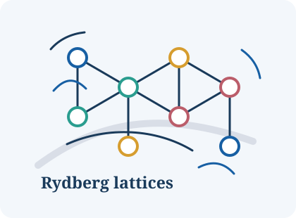
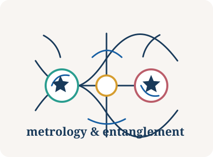
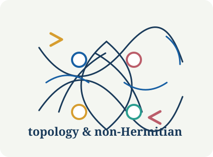

Quantum science across platforms, correlations, and topology
I am a postdoctoral scholar and Eberly Research Scholar in Atomic, Molecular, and Optical Physics at Pennsylvania State University, working with Bryce Gadway. My research connects programmable quantum simulation, quantum metrology, multipartite entanglement, and topological/non-Hermitian physics.
Research Themes
Three threads, one playground: engineer quantum systems, read out correlations, and use topology as a control knob.

01Quantum Simulation & Many-Body Physics
Rydberg arrays, frustrated lattices, engineered interactions, dissipative preparation.

02Quantum Metrology & Entanglement
Continuous-variable systems, non-Gaussian resources, steering, quantum Fisher information.

03Topology & Non-Hermitian Physics
Weyl points, Fermi arcs, spectral winding, skin modes, nonreciprocal amplification.
Quantum Simulation & Many-Body Physics
I design routes to engineer and prepare correlated quantum matter in programmable platforms, with a current focus on dipolar Rydberg arrays, frustrated magnetism, topological pumping, and driven or dissipative control.
- Mingsheng Tian, Rhine Samajdar, and Bryce Gadway. Engineering Frustrated Rydberg Spin Models by Graphical Floquet Modulation, Physical Review Letters 135, 253001 (2025).
- Mingsheng Tian, Zhen Bi, Thomas Iadecola, and Bryce Gadway. Dissipative Preparation of Correlated Quantum States in Dipolar Rydberg Arrays, arXiv:2604.18542 (2026).
- Chenxi Huang, Tao Chen, Qian Liang, Matthew A. Krebs, Ethan Springhorn, Ruiyu Li, Mingsheng Tian, Kaden R. A. Hazzard, Jacob P. Covey, and Bryce Gadway. Interaction-assisted topological pumping in few- and many-atom Rydberg arrays, arXiv:2512.12364 (2025).
- Chenghe Yu*, Mingsheng Tian*, Ningxin Kong, Matteo Fadel, Xinyao Huang, and Qiongyi He. Exceptional-point-induced nonequilibrium entanglement dynamics in bosonic networks, npj Quantum Information 12, 14 (2026).
Quantum Metrology & Entanglement
I develop experimentally relevant ways to certify, classify, and use multipartite quantum correlations, especially in continuous-variable and non-Gaussian systems where full tomography is expensive.
- Mingsheng Tian*, Xiaoting Gao*, Boxuan Jing, Fengxiao Sun, Matteo Fadel, Manuel Gessner, and Qiongyi He. Characterizing the Multipartite Entanglement Structure of Non-Gaussian Continuous-Variable States with a Single Evolution Operator, Physical Review Letters 135, 140201 (2025).
- Xiaoting Gao*, Mingsheng Tian*, Fengxiao Sun, Yadong Wu, Yu Xiang, and Qiongyi He. Classifying Multipartite Continuous Variable Entanglement Structures through Data-Augmented Neural Networks, accepted by Nature Machine Intelligence.
- Mingsheng Tian, Yu Xiang, Feng-Xiao Sun, Matteo Fadel, and Qiongyi He. Characterizing Multipartite Non-Gaussian Entanglement for a Three-Mode Spontaneous Parametric Down-Conversion Process, Physical Review Applied 18, 024065 (2022).
- Mingsheng Tian, Zihang Zou, Da Zhang, David Barral, Kamel Bencheikh, Qiongyi He, Feng-Xiao Sun, and Yu Xiang. Certification of Non-Gaussian Einstein-Podolsky-Rosen Steering, Quantum Science and Technology 9, 015021 (2024).
- Dongyu Liu*, Mingsheng Tian*, Shuheng Liu, Xiaolong Dong, Jiajie Guo, Qiongyi He, Haitan Xu, and Zheng Li. Ghost Imaging with Non-Gaussian Quantum Light, Physical Review Applied 16, 064037 (2021).
- Xiaolong Dong, Dongyu Liu, Mingsheng Tian, Shuheng Liu, Yi Li, Tianxiao Hu, Qiongyi He, Haitan Xu, and Zheng Li. Characterizing Quantum States of Light Using Ghost Imaging, Physical Review Applied 20, 044001 (2023).
- Xiaolong Dong*, Dongyu Liu*, Mingsheng Tian, Yi Li, Shuheng Liu, Qiongyi He, Haitan Xu, and Zheng Li. Imaging-Based Quantum Tomography of Orbital-Angular-Momentum-Multiplexed Continuous-Variable Entangled States, Physical Review Applied 19, 044057 (2023).
- Dongmei Han, Fengxiao Sun, Na Wang, Yu Xiang, Meihong Wang, Mingsheng Tian, Qiongyi He, and Xiaolong Su. Remote Preparation of Optical Cat States Based on Gaussian Entanglement, Laser & Photonics Reviews 17, 2300103 (2023).
- Ningxin Kong, Haojie Wang, Mingsheng Tian, Yilun Xu, Geng Chen, Yu Xiang, and Qiongyi He. Noncommutativity as a Universal Characterization for Enhanced Quantum Metrology, Physical Review Letters 136, 010201 (2026).
Topology & Non-Hermitian Physics
I am interested in how nonreciprocity, gain/loss, feedback, and spectral topology reshape transport, localization, and boundary phenomena in photonic, mechanical, and bosonic platforms.
- Mingsheng Tian, Ivan Velkovsky, Tao Chen, Fengxiao Sun, Qiongyi He, and Bryce Gadway. Manipulation of Weyl Points in Reciprocal and Nonreciprocal Mechanical Lattices, Physical Review Letters 132, 126602 (2024).
- Mingsheng Tian, Fengxiao Sun, Kaiye Shi, Haitan Xu, Qiongyi He, and Wei Zhang. Nonreciprocal Amplification Transition in a Topological Photonic Network, Photonics Research 11, 852 (2023).
- Kaiye Shi, Mingsheng Tian, Feng-Xiao Sun, and Wei Zhang. Non-Bloch Topological Phases in a Hermitian System, Physical Review B 107, 205154 (2023).
- Ningxin Kong, Chenghe Yu, Yilun Xu, Matteo Fadel, Xinyao Huang, and Qiongyi He. Manipulating Spectral Windings and Skin Modes through Nonconservative Couplings, Physical Review A 110, 053507 (2024).
Selected Publications
- Mingsheng Tian, Rhine Samajdar, and Bryce Gadway. Engineering Frustrated Rydberg Spin Models by Graphical Floquet Modulation, Physical Review Letters 135, 253001 (2025).
- Mingsheng Tian*, Xiaoting Gao*, Boxuan Jing, Fengxiao Sun, Matteo Fadel, Manuel Gessner, and Qiongyi He. Characterizing the Multipartite Entanglement Structure of Non-Gaussian Continuous-Variable States with a Single Evolution Operator, Physical Review Letters 135, 140201 (2025).
- Mingsheng Tian, Ivan Velkovsky, Tao Chen, Fengxiao Sun, Qiongyi He, and Bryce Gadway. Manipulation of Weyl Points in Reciprocal and Nonreciprocal Mechanical Lattices, Physical Review Letters 132, 126602 (2024).
- Xiaoting Gao*, Mingsheng Tian*, Fengxiao Sun, Yadong Wu, Yu Xiang, and Qiongyi He. Classifying Multipartite Continuous Variable Entanglement Structures through Data-Augmented Neural Networks, accepted by Nature Machine Intelligence.
- Mingsheng Tian, Zhen Bi, Thomas Iadecola, and Bryce Gadway. Dissipative Preparation of Correlated Quantum States in Dipolar Rydberg Arrays, arXiv:2604.18542 (2026).
- Ningxin Kong, Haojie Wang, Mingsheng Tian, Yilun Xu, Geng Chen, Yu Xiang, and Qiongyi He. Noncommutativity as a Universal Characterization for Enhanced Quantum Metrology, Physical Review Letters 136, 010201 (2026).
- Chenghe Yu*, Mingsheng Tian*, Ningxin Kong, Matteo Fadel, Xinyao Huang, and Qiongyi He. Exceptional-Point-Induced Nonequilibrium Entanglement Dynamics in Bosonic Networks, npj Quantum Information 12, 14 (2026).
- Mingsheng Tian, Yu Xiang, Feng-Xiao Sun, Matteo Fadel, and Qiongyi He. Characterizing Multipartite Non-Gaussian Entanglement for a Three-Mode Spontaneous Parametric Down-Conversion Process, Physical Review Applied 18, 024065 (2022).
Academic Path
2024-now Postdoctoral Scholar / Eberly Research Scholar, Pennsylvania State University
2019-2024 Ph.D. in Physics, Peking University
2015-2019 Bachelor in Physics, Huazhong University of Science and Technology
Honors
- Rising Researcher Award from Penn State's Institute for Computational and Data Sciences, 2025
- Outstanding Graduate of Peking University, 2024
- Scientific Research Award of Peking University, 2022 and 2023
- Outstanding Graduate of Huazhong University, 2019
Beyond Research
Volleyball · Basketball · Tennis · Hiking